stat_summary
Summarise y values at every unique x
Details
Parameters
When an aesthetic is used an a parameter, like stat_summary(fun = 3), it will override mappings from data.
fun, NULL
Default geom
geom_pointrange. Override with the geom argument: stat_summary(geom="point").
See also
- geom_errorbar: error bars
- geom_pointrange: range indicated by straight line, with point in the middle
- geom_linerange: range indicated by straight line
- geom_crossbar: hollow bar with middle indicated by horizontal line
- smean.sdl: for description of summary functions provide by Hmisc. Replace the . with a _ to get the ggplot name
- stat_smooth: for continuous analog
Examples
> c <- qplot(cyl, mpg, data=mtcars) > c + stat_summary() 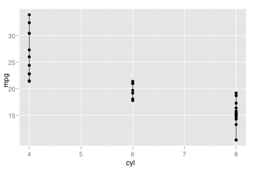 > c + stat_summary(fun="mean_cl_normal", colour="red") 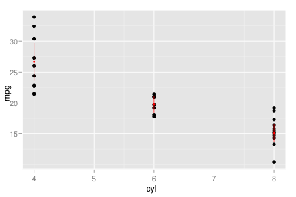 > c + stat_summary(fun="mean_cl_normal", colour="red", geom="crossbar") 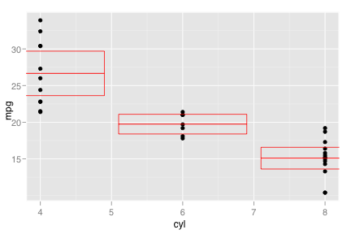 > c + stat_summary(fun="mean_cl_normal", colour="red", geom="crossbar", width=0.2) 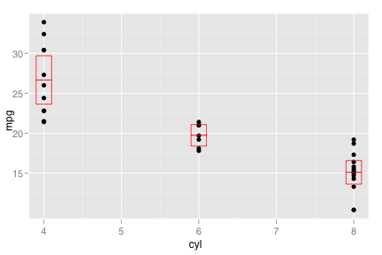 > c + stat_summary(fun="mean_cl_normal", colour="red", geom="errorbar", width=0.2) 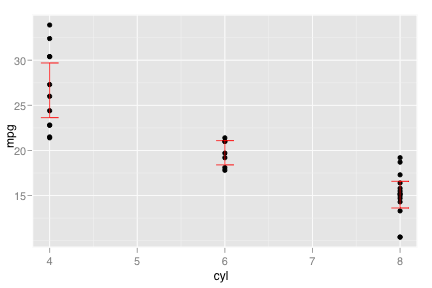 > c + stat_summary(fun="mean_cl_normal", colour="red", geom="linerange") 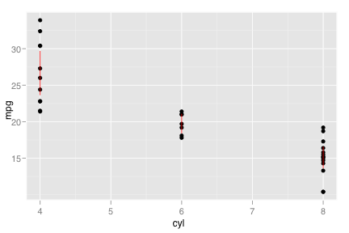 > c + stat_summary(fun="mean_cl_normal", colour="red", geom="smooth") 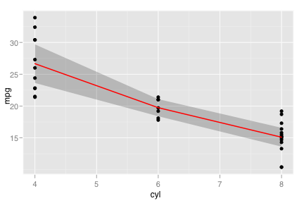 > > c + stat_summary(fun="mean", colour="red", geom="point") 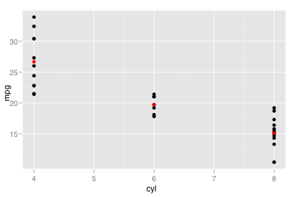 > c + stat_summary(fun="mean", colour="red", geom="path") 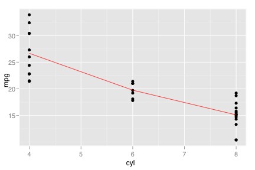 > c + stat_summary(fun="sum", colour="red", geom="point") > > statsumbar <- function(fun, ...) {(fun=fun, colour="red", geom="crossbar", width=0.2, ...)} > > c + statsumbar("mean_cl_boot") > c + statsumbar("mean_sdl") 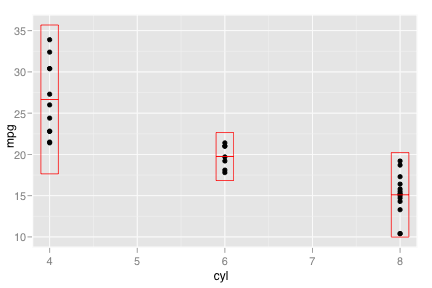 > c + statsumbar("mean_sdl", stat_params = list(mult=1)) > c + statsumbar("median_hilow") 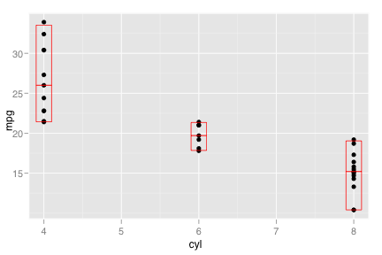 > > # A bigger dataset, where these summaries are actually useful > m <- ggplot(movies, aes(x=round(rating), y=votes)) + geom_point() > > (m2 <- m + stat_summary(fun="mean_cl_boot", geom="crossbar", colour="red", width=0.3)) 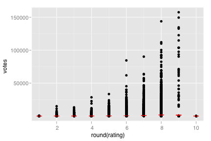 > # Notice how the overplotting skews out visual perception of the mean > # supplementing the raw data with summary statisitcs is _very_ important > > # Next, we'll put votes on a log scale. > # Transforming the scale performs the transforming before the statistic. > # This means we're calculating the summary on the logged data > m2 + scale_y_log10() 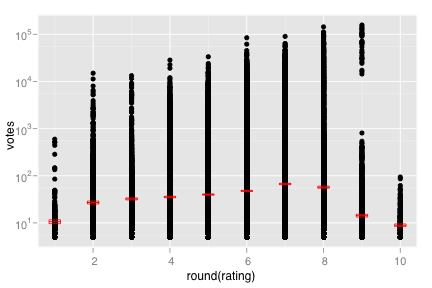 > # Transforming the coordinate system performs the transforming after the statistic > # This means we're calculating the summary on the raw data, and stretching > # the geoms onto the log scale > m2 + coord_trans(y="log10") 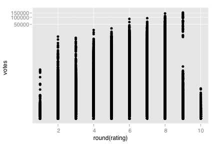